Родина¶
Гіпотези¶
Двір 1038 Тартаку в сповідальному розписі 1874 (ЦДІАК 1045-1-162, скани 0107–0108) — родина Францішека Прента (†1912): дружина Юзефа з Кузьміньських, син Флоріан, дочка Серафина (дружина Андрія...Відкрита — шукаємо · H0048 Антоній Григорієв Прент (47 р. у 1874, двір 1046) і Войцех Григорієв Прент (44 р., двір 1050) — брати Францішека Прента (Тартак, двір 1038): обидва Пренти по батькові Григорієв, живуть в одному...Відкрита — шукаємо · H0050 Михалина з Прентів, 28 р., дружина Франца Кучинського (Осипова) 30 р. (двір 55 Тартака, 1900–1908), — Михалина, дочка Францішека ПрентаЗакрита · H0075
Життя¶
-
бл. 1832
Народження1 · гіпотеза
≈1832 — обчислено з віку 80 років на 1912 р.
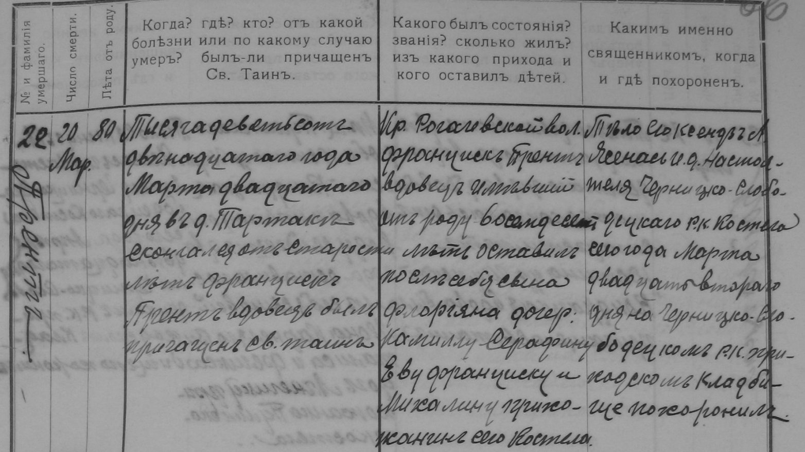
-
1869
Місце проживання · Тартак2 · гіпотеза
Тартак, сповідальний розпис Новоград-Волинського костелу 1869 (ЦДІАК 1045-2-274), скан 0382, двір 12 (№2609, жін. №2731), у домі Игнатія Виногродського: «Францъ Прентъ» 40, жена Юзефа изъ Козьминьскихъ Прентъ 36; діти не записані
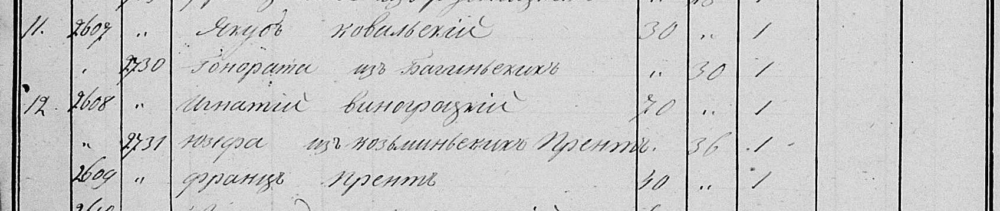
-
1870
Місце проживання · Тартак3 · гіпотеза
Слобода Тартак, сповідальний розпис Новоград-Волинського костелу 1870 (ЦДІАК 1045-2-275), скан 0467, двір 5 (№2461): «Францъ Прентъ» 36, жена Юзефа изъ Кузьминьскихъ 34; дочки Камилія 11, Серафина 9, Ева 6, Францишка 3
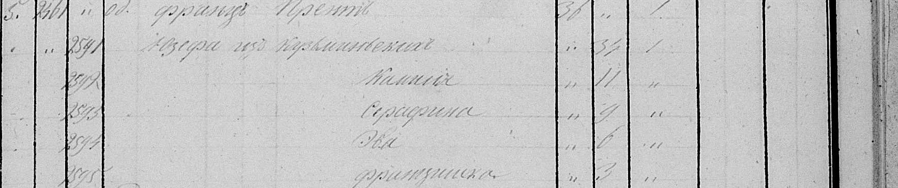
-
1873
Місце проживання · Тартак4 · гіпотеза
Тартак, сповідальний розпис Новоград-Волинського костелу 1873, двір 991 (№2511): «Кре: Францишекъ Прентъ» 35, жена Юзефа изъ Кузьминскихъ 34; син Флоріанъ 1, дочка Камилія 14 (решту дітей не звірено)
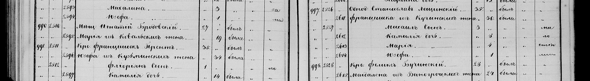
-
1874
Місце проживання · Тартак5 · гіпотеза
Тартак, сповідальний розпис Новоград-Волинського костелу, двір 1038: «Кре: Францишекъ Григорієвъ Прентъ» 36, жена Юзефа из Кузьминскихъ 35; син Флоріанъ 2; дочки Камилія 15, Серафина 12, Эва 10, Францишка 8, Михалина 4
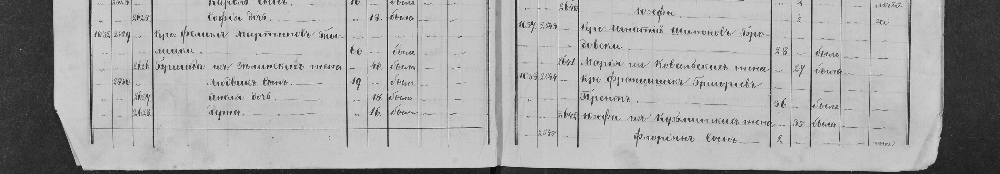
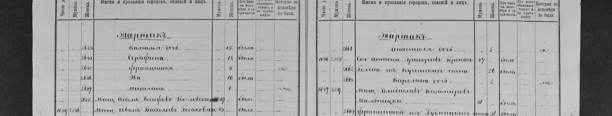
-
1886
Місце проживання · Тартак6 · гіпотеза
Тартак Слобода, сповідальний розпис Новоград-Волинського костелу 1886 (ЦДІАК 1045-2-704), скан 0199, двір 1360 (№3422): «Прентъ Францъ Кр. ву.» 56 (позначка «ву.», ймовірно вдівець; дружини в розписі немає); син Флоріан 11; дочки Францишка 19, Михалина 16
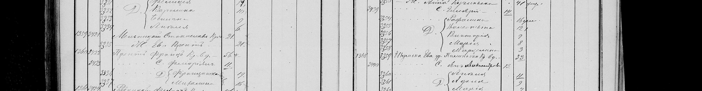
-
між 1900 – 1908
Місце проживання · Тартак7 · гіпотеза
Тартак, сповідальний розпис Новоград-Волинського костелу, книга 1900–1908 (ЦДІАК 1045-2-924; вік у книзі — на початок 1900 р., пізніші дописи до 1911), скан 0481, двір 86: «Прентъ Францъ» вдовецъ 67; син Флоріанъ Францевъ 25, жена Валентина ур. Ковальская 22 (1908); син Францъ; дочки Эмилия 4, Петронелія (1895), Анна (1902) — належність дочок не з'ясована
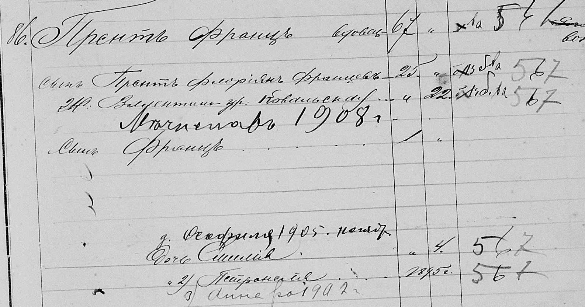
-
1904
Місце проживання · Тартак8 · гіпотеза
Тартак, сповідний розпис 1904: двір 2317, Франц, голова двору, 67 р. (читається так; за записом про смерть 1912 — 80 р.), вдівець
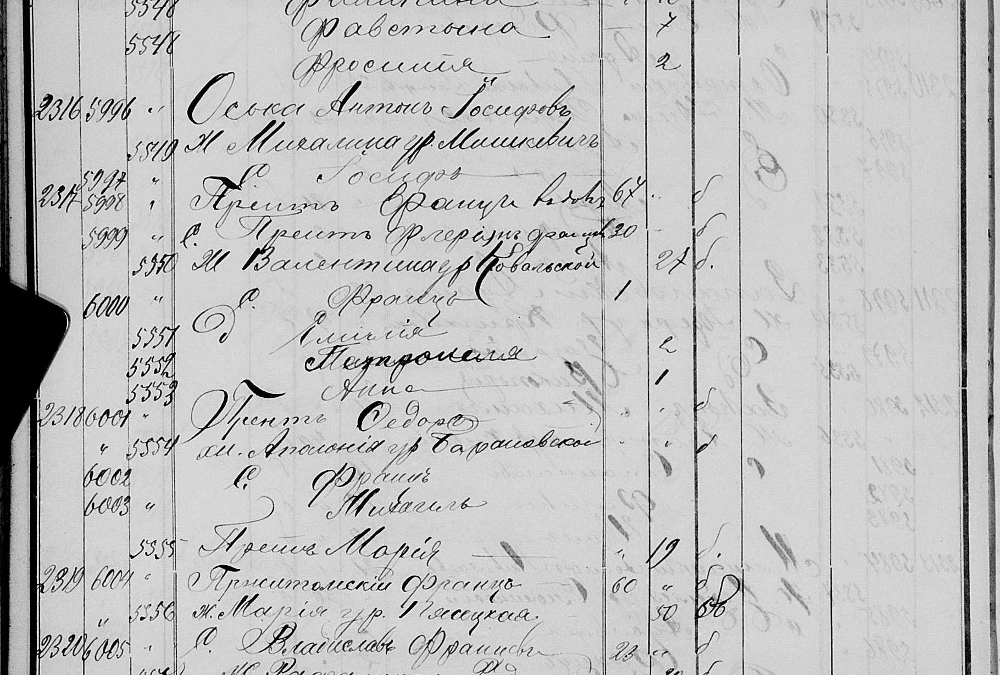
-
1905
Місце проживання · Тартак8 · гіпотеза
Тартак, сповідний розпис 1905: двір 98, Франц, голова двору, вдівець, 74 р.
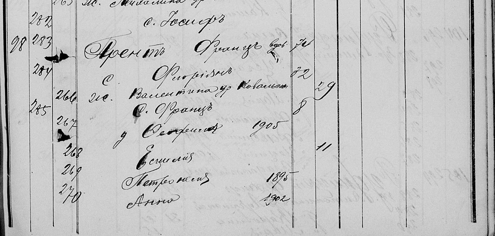
-
1906
Місце проживання · Тартак8 · гіпотеза
Тартак, сповідний розпис 1906: двір 99, Франц, голова двору, вдівець, 75 р.
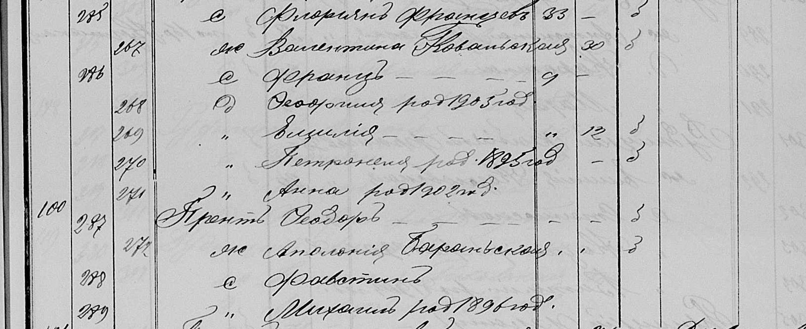
- 20 березня 1912 Смерть · Тартак1 д. Тартак; помер від старості, вдівець, 80 років; похований 22.03.1912 на Чернецько-слободському кладовищі


Імена в джерелах¶
- Франциск Прент uk
- Францискъ Прентъ ru
Документи¶
Медіа¶
- ЦДІАК 1045-2-276, скан 0575, двори 990 (Бродовські) і 991 (Пренти), Тартак, 1873 — документ у сторі доказів
7cbe25302294… - ЦДІАК 1045-1-162, скан 0107, двір 1038 — Францишек Григорієв Прент, Юзефа з Кузьміньських, син Флоріан — документ у сторі доказів
b51fa10785de… - ЦДІАК 1045-1-162, початок скану 0108 — дочки двору 1038: Камилія, Серафина, Францишка, Ева, Михалина — документ у сторі доказів
838f97213402… - ДАЖО 178-3-219, скан 0339, №22 — смерть Францішека Прента, 20.03.1912 — документ у сторі доказів
4db6b637bef0…
Нотатки¶
Батько Флоріана Прента Флоріанъ Прентъ і Серафини Серафина Ковальська (дружини Андрея Андрій Ковальский, матері Бернарда Бернад Ковальский). Діти за записом про смерть: син Флоріан, дочки Камилла, Серафина, Ева, Франциска й Михаліна (крім Флоріана й Серафини окремих карток немає). Дружина — вдова вже 1912 р., не відома. Хрещення Флоріана — Флоріанъ Прентъ.
-
Метричні книги Чернецько-слободського костелу (народження), 1910–1917 ↩↩
-
Сповідний розпис римо-католиків Новоград-Волинського костелу, 1869 ↩
-
Сповідний розпис римо-католиків Новоград-Волинського костелу, 1870 ↩
-
Сповідний розпис римо-католиків Новоград-Волинського костелу, 1873 ↩
-
Сповідальний розпис парафіян Новоград-Волинського римо-католицького костелу 1874 р. ↩
-
Сповідний розпис римо-католиків Новоград-Волинського повіту (Новоград-Волинський костел), 1886 ↩
-
Исповедная роспись римо-католиков Новоград-Волынского деканата, 1900–1908 ↩
-
Исповедные росписи римо-католиков Новоград-Волынского костела, 1904–1906 ↩↩↩